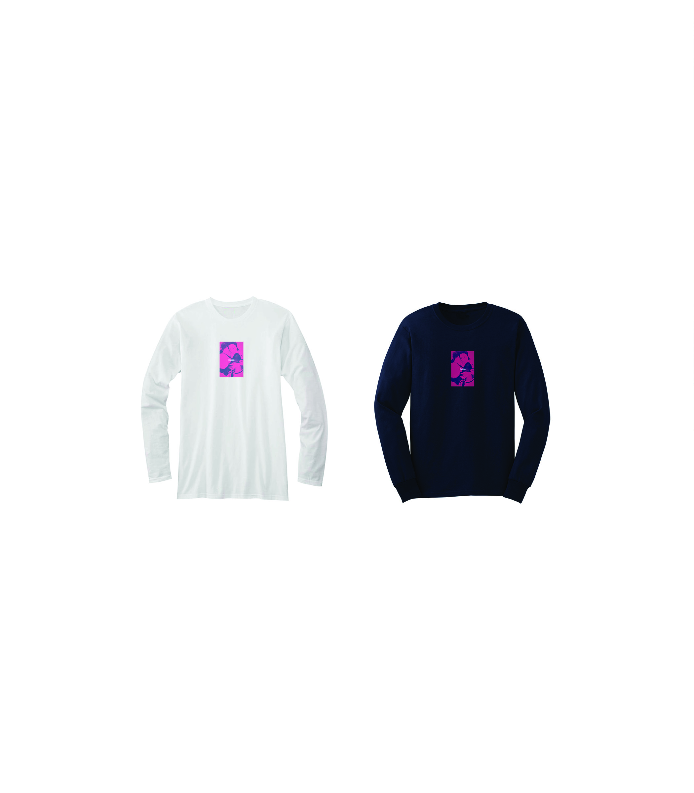

BASE TOKYO.
BASE TOKYO is a experimental brand which Kainen Yu and Peter Shireman started back in 2013 as a hobby, however ended up as something they will get paid for. Both Kainen Yu and Peter Shireman are in charge of building the aesthetic of BASE. At the same time, Peter Shireman is also in charge of managing the brand. We successfully sold numerous products to close friends and other acquaintances during the past three years.
